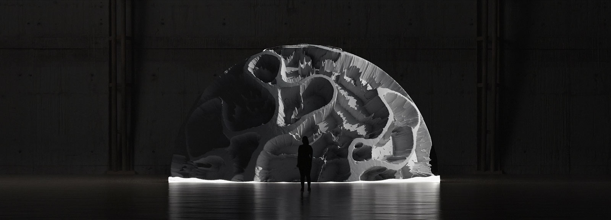
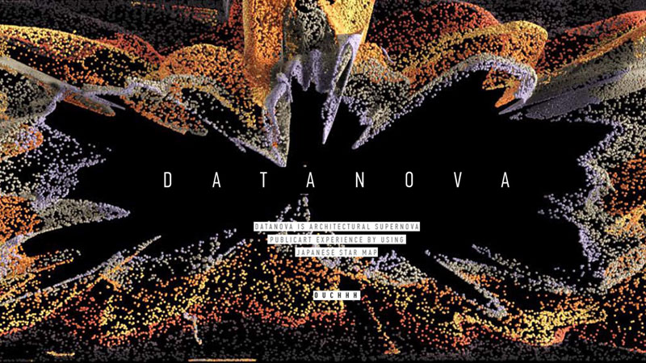
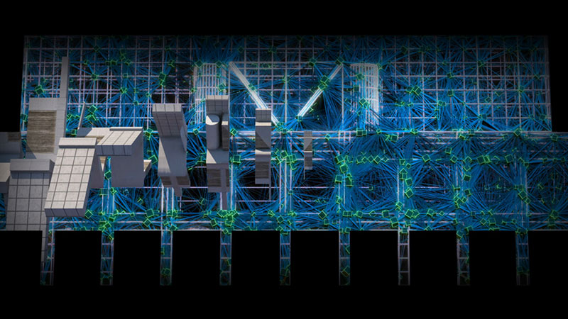

CONCEPT
思考実験とプロトタイピングを通して
ありえる都市の形を探求する
リサーチプロジェクト
「METACITY」は、思考実験とプロトタイピングを通して「ありえる都市」の形を探求するリサーチプロジェクトです。
リサーチの成果は、言語的アプローチだけでなく、受け取る側に思考する余白ときっかけを提供できるアートコミュニケーションのアプローチをとっていきます。
都市に関わる専門家だけでなく、問題を発見し問題提起するアーティストや研究者、その問題の解決策を探求するデザイナー、
解決策を具現化する技術者、住人の観点から発言する地域コミュニティ、継続的実行方法を模索する企業や行政など、
様々な視点とスキルを持つステークホルダーを巻き込み活動していきます。
成果発表と出会いや活動のきっかけをつくる年に一回に開催するアート展示を含めたカンファレンス、
年間を通して探求と試作を続けるラボ、活動内容を世界に発信するメディアを実施していきます。
ART EXHIBITION
"AVA/V2 (Particle Physics Scientific Installation)" by Ouchhh
バックミンスターフラーのアイコン的なドーム建造物にインスパイアされて作られ、主たるインスピレーションは、素粒子物理学に着目した実験から生みだされた作品。
巨大なドームの内側ではなく、外側360度に対し６台のプロジェクターで全体を包む様にプロジェクションマッピングされた特殊なインスタレーションで、世界各国で様々な賞を受賞しているほか、アルスエレクトロニカやTEDx CERNなど世界的なクリエイティブシーンで展示され話題になっている作品。
今回はそのこの作品展示と共にOuchhhが日本初上陸となります！
Ouchhh profile
Ouchhhはアルスエレクトロニカを始め数々の受賞歴を持つ、アート・サイエンスシーンで頭角を現しているクリエイティブ・メディア・エージェンシー。 テクノロジー・アート・サイエンスの垣根を超えた体験を生み出し、インタラクティブなメディアプラットフォーム、 AIやビックデータをつかったビジュアル生成による彫刻や絵画的表現、キネティックなパーマネントアート、ドームやVRなどの没入型の映像体験、 そして建築の外壁を用いたプロジェクションマッピングをはじめとした映像＋音楽パフォーマンスなど、様々な技術を複合的に扱うことを得意としている。 特にメディアアートと建築分野で、デジタルと身体をハイブリッドな関係で結びつける空間と体験を世に送り出している。
Ouchhh 受賞歴
| 2017- | ARCHITECTURAL _ AI PERFORMANCE- ボリショイ劇場- Circle of Light モスクワ |
|---|---|
| 2017- | 世界最大の建築AI Performance- iMapp ブカレスト |
| 2017- | "Homeomoprhism" 文化庁メディア芸術祭 ｜ Japan Media Arts Festival |
| 2017- | "AVA_V2" – ヨークアートギャラリー- イギリス |
| 2016- | "Homeomorphism"- ナショナルスペースセンター- イギリス |
| 2016- | "Digital Couture/Arzu Kaprol" –メルセデスファッションウィーク- イスラエル |
| 2016- | "Sphinx", オーディオビジュアルパブリックピース,ローマ, イタリア |
| 2015- | "O", Europalia |国際アートフェスティバル, ブリュッセル, ベルギー |
| 2015- | "POLYHX", シグナルフェスティバル, プラハ, チェコ |
| 2015- | "AVA", アルタ・パナマ . フランス, パリ |
| 2015- | "Homeomorphism", モントリオール |
| 等 |
OTHER EXHIBITION
プロジェクションマッピング （鑑賞無料）
2019年1月18日(金)〜19日(土) 17:00〜20:00(予定)
2作品 繰り返し連続投影
上映場所：幕張メッセ正面広場（国際会議場 壁面）
幕張メッセの国際会議場壁面に巨大で先鋭的なプロジェクションマッピング上映をします。今回スペシャルゲストとして初来日するOUCHHHは日本の星座データなどを用いたプロジェクションマッピングを披露します。
加えて、日本をはじめ様々な国でプロジェクションマッピングのコンテンツを製作しているベルギーのMaxime Guislainによる作品「Odyssey」も上映します。ハイクオリティなプロジェクションマッピングのショーを２本立てでご覧頂けます。

"DATANOVA" by Ouchhh
アルスエレクトロニカなど、世界的なアートシーンで評価されているOUCHHHによる初公開完全オリジナルのプロジェクションマッピング作品。 様々なデータを用いた作品を製作している彼らが今回扱うデータは、日本の星座で、それを幕張メッセの建築に合わせてプログラミングし、先鋭的なプロジェクションマッピング作品として上映されます。

"Odyssey" by Maxime Guislain
プロジェクションマッピング国際コンペティション（メディアーツ逗子）グランプリ受賞（2014年）
3DCG アーティストとして、これまでプロジェクションマッピング業界でビジュアルエフェクトを専門に活動。 これまで、ミュージカル"ピーターパン THE NEVER ENDING STORY”、
2013年北京国際映画祭オープニング、パテック・フィリップ175周年祭、"Mons 2015 European capital of culture"開会式など数々のプロジェクトに携わる。
3DCG アーティストとして常に新たな経験やアイデアを求め活動している。
CONFERENCE
国内外のアーティストや研究者、デザイナー、技術者、企業や行政など、
様々な視点で「ありえる都市」を探求するカンファレンス。
テーマ：「City As ___」
都市は物理的・制度的に進化の袋小路に入ってしまっているのではないか？急速な気候変動、止まらぬ人口減少、極端な富の偏在、テクノロジーの過剰な進化など、人間の生活、ひいては都市のあり方が大きく変わろうとしている。
行政やデベロッパーだけの視点だけでなく文化や技術を推進する様々な分野から招聘した先駆者達の対話から「ありうる都市」を象る言葉を紡ぎ出していく。
SPEAKERS / PERFORMERS / MODERATOR

| DAY 1 | 1月18日(金) |
|---|---|
| 11:00-11:20 | オープニング |
| 11:20-12:05 | 基調講演1 「ニューエコノミー／ネクストジェネレーション」 松島 倫明 |
| 12:05-12:50 | 基調講演2 「ペチャクチャ・シティ」 マーク・ダイサム (同時通訳付) |
| 12:50-13:50 | ランチ |
| 13:50-14:00 | ビデオデモンストレーション 「POETIC_AI」 Ferdi Alici (Ouchhh) |
| 14:00-14:45 | セッション1 「千葉市憂愁（チバ・シティ・ブルーズ）」 熊谷 俊人 x 松島 倫明 |
| 14:45-15:30 | セッション2 「メディアアート x 建築の可能性」 Ferdi Alici (Ouchhh) (同時通訳付) |
| 15:30-16:00 | ブレイク |
| 16:00-17:00 | セッション3 「アート系スタートアップの出現と都市文化に与える影響」 成瀬 勇輝 x 鈴木 綜真 x 大高 健志 |
| 17:00-17:45 | セッション4 「ウェザードリブン・シティ」 岡 瑞起 x 石橋 知博 |
| 17:45-18:00 | クロージング |
| DAY 2 | 1月19日(土) |
|---|---|
| 11:00-11:20 | オープニング |
| 11:20-12:50 | 基調講演3 「文化人類学と現"在"美術からみる「ポストヴィレッジ」そして「メタシティ」 宇川 直宏 x 奥野 克巳 |
| 12:50-13:50 | ランチ |
| 13:50-14:50 | セッション5 「都市の生死とは？」 関野 らん x 高橋 洋介 x 長谷川 愛 |
| 14:50-15:35 | セッション6 「ポストコミュニティ」 和田 永 x 松本 紹圭 |
| 15:35-16:05 | ブレイク |
| 16:05-16:20 | パフォーマンス 和田 永 |
| 16:20-17:05 | セッション7 「シティ・アズ・キャンバス」 SIDE CORE |
| 17:05-17:50 | セッション8 「超都市」 松村 宗亮 x 豊田 啓介 |
| 17:50-18:00 | クロージング |
（12月30日現在 若干変更になる可能性がございます）
WORKSHOP
子供や地域の人々、若いクリエイターそして様々な人達に向けた、創造を体験するワークショップ
TICKETS
Conference + Art Exhibition
1Day チケット ￥3,000
2Day チケット ￥5,000
Art Exhibition
大人 ￥1,000 高校生以下 ￥500
※ カンファレンス参加者と未就学児は無料
※ Art Exhibition鑑賞のみの場合は事前申込みは不要です。当日会場にお越しください。
※ プロジェクションマッピングの鑑賞は無料です。
※ 当日券がございますので直接会場までお越しください。
お席に限りがありますのでご了承ください。
ACCESS
〒261-0023 千葉県千葉市美浜区中瀬２丁目1
幕張メッセ 国際会議場
https://www.m-messe.co.jp/access/
主催：幕張メッセ
日本最大級のコンベンション施設としてオープンした幕張メッセは、2019年に30周年を迎えます。幕張メッセはこれまで、技術やエンターテインメントが集約する「場」を提供してきましたが、今回、その「場」から未来に向けて、『アートと都市』にフォーカスしたプロジェクトを始動させます。
鑑賞するだけの「アート」ではなく、それらをどのように都市の発展に活かせるのか、アーティスト、企業、行政、研究者、そこに住む人々など様々なジャンルの方々と一緒に考えます。異なるジャンルの視点を知ることで、相乗効果をねらいます。
またこのプロジェクトを通して、幕張メッセとともに歩んできた幕張新都心という街のさらなる進化と、「企業（技術や製品）」と「クリエイター・アーティスト（アイデアや表現）」を結びつける場の創出を目指します。
今回はその第1歩として、世界で活躍するアーティストやクリエイター、研究者などを招請しカンファレンスやトークセッションを中心にイベントを展開します。これを契機に、今後はハッカソンやコンペティション、ビジネス展示などの企画も展開し、開催場所も幕張新都心全体へ広げていきたいと考えています。
企画：土肥武司 (UNLIT inc.) / 石多未知行 (PMAJ) / 青木竜太 (VOLOCITEE Inc.)
制作・進行・運営：HerTMAX Co.,Ltd. / ㈱幕張メッセ / ㈱千葉共立
コンセプトデザイン：青木竜太（VOLOCITEE Inc.）
アートディレクション・グラフィックデザイン：三尾康明（KARAPPO Inc.）
アートエキシビションテクニカル：石多未知行（PMAJ) / 土肥武司 (UNLIT inc.) / ヒビノメディアテクニカル㈱
カンファレンス スピーカーキュレーション：青木竜太（VOLOCITEE Inc.）
キッズワークショップ：西千葉工作室
ウェブデザイン：三尾康明（KARAPPO Inc.）俵山宏和（SOLU MEDIAGE inc.）
アタック映像：サソウシンヤ
アタック映像サウンドデザイン：TommyTommy(urinbo)
協力：PMAJ / (株)ウェザーニューズ / 松本 悠里
PR広報：HerTMAX Co.,Ltd. / ㈱幕張メッセ
後援：千葉市 / 千葉市教育委員会
問い合わせ・取材等の受付
metacity@m-messe.co.jp
metacity@m-messe.co.jp